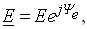
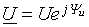
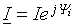
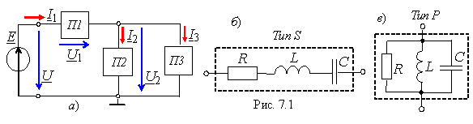
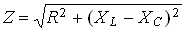
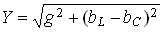
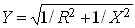
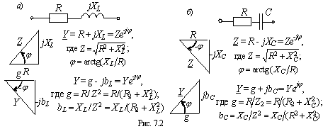
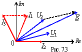

ТЕОРЕТИЧЕСКИЕ СВЕДЕНИЯ И РАСЧЕТНЫЕ ФОРМУЛЫ
Уравнения электрического равновесия токов и напряжений в разветвленных цепях синусоидального тока записывают аналитически в комплексной форме и представляют в виде векторных диаграмм.
Рассмотренные ранее методы расчёта цепей постоянного тока (посредствам законов Кирхгофа, методом узловых напряжений, контурных токов, наложения, преобразования схем) справедливы для расчёта цепей синусоидального тока, если синусоидально изменяющиеся величины (ЭДС, напряжения и токи) представить в виде комплексных чисел: комплекса ЭДС  комплекса напряжения , комплекса тока  и т. д.
В свою очередь комплексные числа представляют в виде векторов на комплексной плоскости. При этом алгебраические действия над синусоидальными величинами заменяют действиями над комплексными величинами или над векторами.
В данной работе исследуется цепь с последовательно-параллельным соединением ветвей - пассивных двухполюсников П1, П2 и П3 (рис. 7.1, а).
После щелчка мышью на двухполюснике П1(двухполюсник типа S) открывается окно с последовательно соединенными элементами R, L и C (рис. 7.1, б), а при щелчке мышью на двухполюсниках П2 и П3 (двухполюсники типа Р) открываются окна с параллельно соединенными элементами R, L и C (рис. 7.1, в). Согласно варианту студент оставляет набор элементов двухполюсника и устанавливает значения их параметров.
Эквивалентное комплексное сопротивление двухполюсника типа S с последовательным соединением элементов (см. рис. 7.1, б) записывают в алгебраической или показательной формуле:
Z = R + jXL - jXC = Ze jφ,
где  и φ = arctg[(XL - XC)/R] - модуль и аргумент комплексного сопротивления двухполюсника.
Эквивалентную комплексную проводимость (в См) двухполюсника типа Р с параллельным соединением элементов (см. рис. 7.1, в) также записывают в алгебраической или показательной форме:
Y = g - jbL + jbC = Ye - jφ ,
где и φ = arctg[(bL - bC)/g] - модуль и аргумент полной комплексной проводимости двухполюсников; g = 1/R, bL = 1/XL, bC = 1/XC - активная, индуктивная и ёмкостная проводимости двухполюсника типа Р.
Двухполюсник типа S (рис. 7.1, б) может быть преобразован в двухполюсник типа P (рис. 7.1, в) и наоборот посредством формул преобразование. Например, двухполюсник типа Р с элементами R и XL преобразовывается в двухполюсник типа S по формулам:
Z' = R' + jX'L = g/Y 2 + j(b/Y 2),
где R' = g/Y 2; X'L = b/Y 2;.
Для наглядности комплексы Z и Y представляют в виде треугольников (рис. 7.2). При этом комплексный ток двухполюсника типа S обычно записывают в виде I = U /Z , а двухполюсника типа Р - в виде I = Y·U, где U - комплексное напряжение на зажимах двухполюсника. 
Запишем первый и второй законы Кирхгофа для схемы рис. 7.1, а:
I1 = I2 + I3; Е = U = U1 + U2, где I2 = Y2U2; I3 = Y3U2; I1= (Y2 + Y3)U2
или I1= U /[Z1 +(Z2(Z3)/( Z2 + Z3)]; Z2 = 1/Y2; Z3 = 1/Y3.
Пусть E = Еe j30(= U = 10e j30( В; Z1= R - jXC = 5 - j5 Ом = 7,07e- j45°Ом; Z2 = R + jXL= 4 + j3 = 5e j37°Ом; Z3 = -jXC = 5e-j90°Ом. Тогда
Y2 = 1/Z2 =1/(5e j37°) = 0,2e - j37°См; Y3 = 1/Z3 = 1/(5e - j30°) = 0,2e j90°См;
Эквивалентная проводимость разветвления:
Y23 = Y2 + Y3 = 0,2e-j37° + 0.2ej90°= 0,2cos37° - j0,2sin37°+ j0,2 = 0,16 - j0,12 + j0,2 = 0,16 + j0,08 = 0,179e j26,5°См.
Комплекс входного сопротивления:
Z = Z1+ Z23= Z1+ 1/Y23 = 7,07e-j45°+ 5,59e-j26,5°= 5- j5 + 5 - j2,5 = 10 - j7,5 = 12,5e-j37°Ом.
Комплекс тока I1= Е / Z = 100е j30°/12,5e - j37°= 0,8e - j67°А.
Комплексы напряжений и токов ветвей:
U1 = Z1I1 = 7,07e - j45°· 0,8e j67°= 5,66e j18° B;
U2= Z23I1 = 5,59e - j26,5°· 0,8e j67°= 4,47e j40,5° B;
I2 = U2 /Z2 = 4,47e j40,5°/5e j37°= 0,89e -j2,5°А;
I3 = U2 /Z3 = 4,47e -j40.5°/5e - j90°= 0,89e j130,5°А.
Векторная диаграмма напряжений и токов ветвей представлена на рис. 7.3.